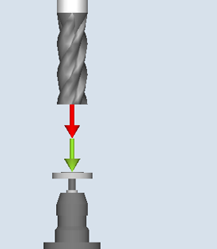
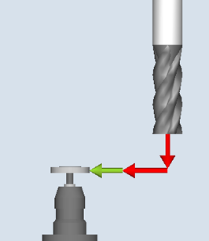
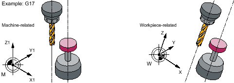
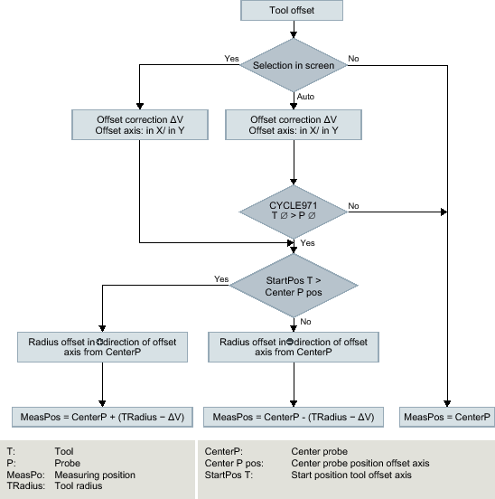
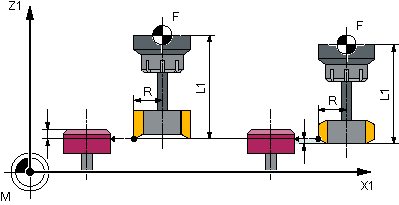
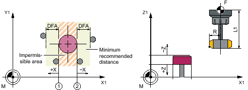

With this measuring version, the tool length or the tool radius of milling and drilling tools can be measured. With milling tools, optionally the cutting edge length or the cutting edge radius can be measured (e.g. to check whether individual cutting edges of the milling tool have been broken out), see Section, "individually check teeth".
A check is made whether the difference to be corrected in the entered tool length or to the entered tool radius in the tool management lies within a defined tolerance range:
Upper limit: Safe area TSA and dimensional difference control DIF
Lower limit: Work offset range TZL
When this area is maintained, the measured tool length or the tool radius is entered in the tool management, otherwise a message is output. Violation of the lower limit is not corrected.
Measuring is possible either with:
Stationary spindle (see Section Tool measurement with stationary spindle)
Rotating spindle (see Section Tool measurement with rotating spindle)
| Note |
|
The "individually check teeth" function is only possible in conjunction with the "Tool measurement with rotating spindle" function! |
|  Measure: Milling tool (CYCLE971), |  Measure: Milling tool (CYCLE971), |
The milling tool or drill must always be aligned perpendicular to the probe before the measuring cycle is called. This means that the tool axis is parallel to the center line of the probe.
Parallel alignment of tool axis, probe axis and axis of the coordinate system
When measuring the tool length, the probe is applied in the direction of the tool.
The measurement can be performed with and without tool offset. Tool offset means a lateral shift of the tool from the center of the probe in an offset axis around the tool radius and corrected by an offset vector.
There are two options when measuring the length with tool offset:
"automatic" tool offset:
An offset is only performed in the selected offset axis, if the tool diameter is greater than the diameter for the length measurement of the tool probe (SD54631 $SNS_MEA_TP_EDGE_DISK_SIZE or SD54646 $SNS_MEA_TPW_EDGE_DISK_SIZE).
The direction of the offset in the selected offset axis is obtained from the starting position of the tool before measurement. If the starting position in the offset axis is closer to the center of the probe, then the offset is performed in the “+" direction of the offset axis, otherwise in the "-" direction. The absolute tool offset amount is obtained from the tool radius minus the offset correction.
Tool offset "yes"
The offset is traversed through in the selected offset axis independent of the size of the tool diameter to the diameter of the probe, and from the approach behavior, is identical with the "auto" tool offset.
Effect, tool offset (radius) and offset correction for measure tool length or calibration in the 3rd axis with CYCLE971 in the G17 plane
Length measurement with and without offset
The tool radius is measured using lateral probing at the probe in the parameterized measuring axis and measuring direction (see the following diagram).
Radius measurement with and without offset
| Note |
The tool probe must be calibrated before the tool measurement (see Calibrate probe (CYCLE971)). |
The tool geometry data (approximate values) must be entered in a tool offset data record.
The tool must be active.
The machining plane must be programmed in which the probe was calibrated.
The tool must be prepositioned in such a way that collision-free approach with the probe is possible in the measuring cycle.
Before the cycle call, a starting position must be assumed from which the probe can be approached collision-free. The measuring cycle calculates the direction of approach and generates the appropriate traversing blocks.
① | General SD54626 $SNS_MEA_TP_TRIG_PLUS_DIR_AX1 |
② | General SD54625 $SNS_MEA_TP_TRIG_MINUS_DIR_AX1 |
Measure tool (CYCLE971), starting positions for measuring in the plane
The tool is positioned at the measurement path distance away from the measuring surface.